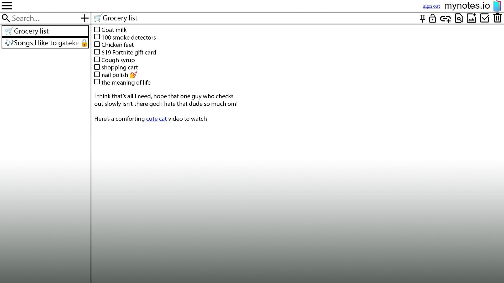

Below is what to expect of mynotes.io when it is complete.
The page will allow the user to create, delete, and edit notes. Notes can contain images and hyperlinks. Most importantly, and what separates mynotes.io from other note applications is that notes also have the ability to be locked. Most note apps just have a lock option for the whole app. In mynotes.io, you can lock and create a password for each individual note. So if one of your passwords is compromised the other notes are still protected (assuming you don't use the same password for every note which is also possible). Other features include:
- Search feature to find a word in all notes (not applicable for locked notes)
- Pin notes to top of list
- Set custom title for note (defaults to first sentence on body if title isn't given)
- Checkboxes
- HTML word formatting (i.e headings, tables)